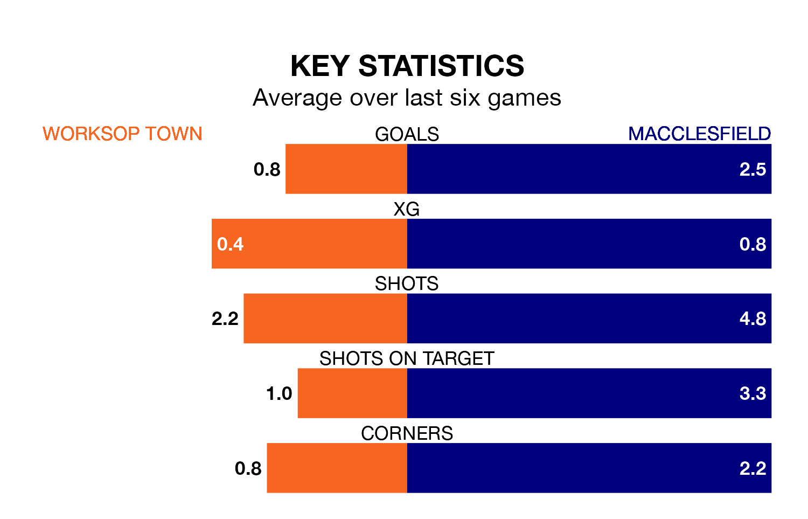

Two of the Northern Premier League's meanest defences go head-to-head at the Windsor Food Service Stadium on Saturday, when Worksop Town host Macclesfield.
Only one side – Whitby Town – has conceded fewer goals than Worksop to date: the home side have let in just 36 goals in 32 games.
Macclesfield have conceded 37 goals in 30 games, giving them the joint-fourth tightest back line so far this season.
Macclesfield are third in the table after 30 games, of which they have won 18 and drawn five, earning 59 points.
Worksop are four places behind the away team in seventh, with 15 wins and eight draws putting them on 53 points.
Town are in disappointing form in the Northern Premier League, with one win and three draws from their last six games.
With five wins and one loss over that period, Macclesfield's form is much better – they have taken 15 points from 18, compared to the hosts' six.
Worksop's last match was on March 9, a 2-0 loss against Ashton United.
Macclesfield beat Marine 2-1 last time out, on March 2.
Updated: 15:10 (UTC), 15/03/24